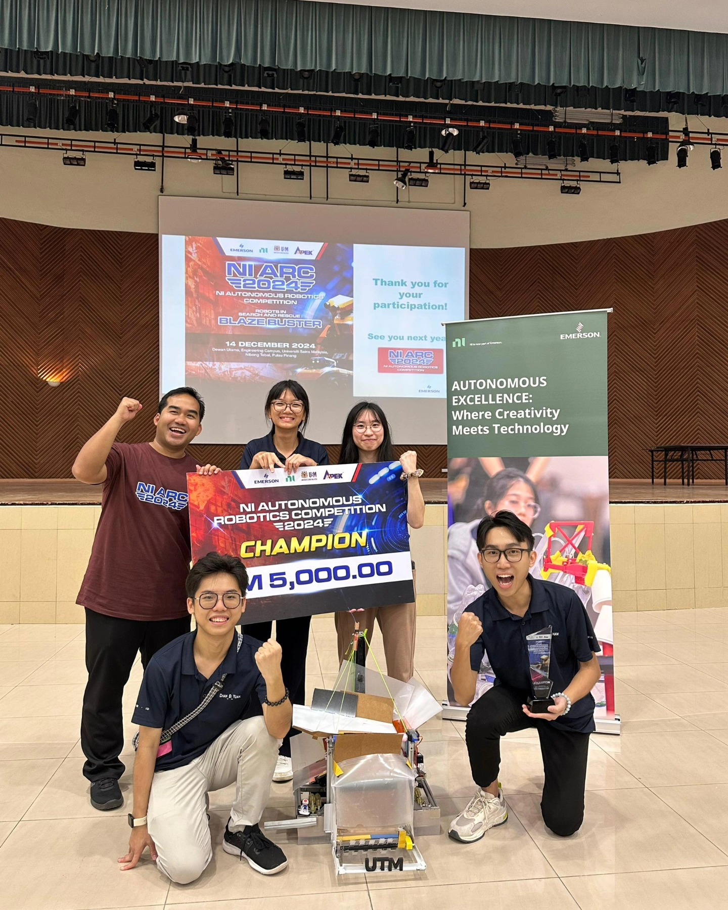
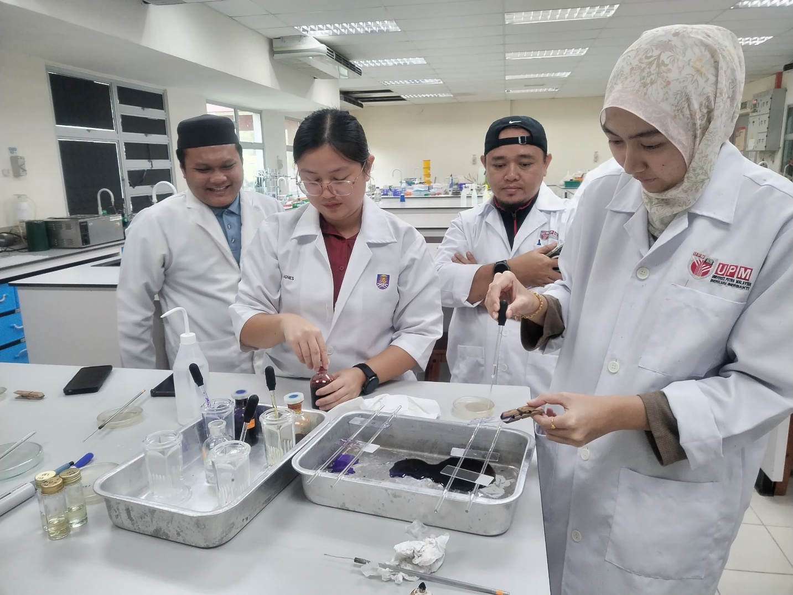
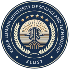

Malaysia is home to some of Southeast Asia's most respected engineering faculties, offering internationally accredited degrees at a fraction of the cost of universities in the UK, Australia, or the US. Whether you want to specialise in Civil, Electrical, Mechanical, or Software Engineering, the six universities profiled below offer outstanding programs, industry connections, and world-class facilities — all ranked and compared for your convenience.
Why Study Engineering in Malaysia?
Affordable World-Class Fees
Engineering degrees in Malaysia cost 50–70% less than equivalent programs in the UK or Australia, with fees typically ranging RM 55,000–120,000 for a full Bachelor's degree.
Globally Accredited Programs
Programs are accredited by the Board of Engineers Malaysia (BEM) and recognised by international bodies including the Washington Accord, opening doors to careers worldwide.
Strong Industry Linkages
Malaysia's booming manufacturing, oil & gas, and tech sectors mean internship and job opportunities are built directly into many engineering curricula.
State-of-the-Art Labs
From robotics labs to clean-room semiconductor facilities, Malaysian engineering universities invest heavily in practical, hands-on infrastructure.
Multicultural Campus Life
With students from over 100 countries, studying in Malaysia builds the cross-cultural communication skills that global engineering firms prize above all.
Low Cost of Living
No harsh winters. Malaysia's tropical climate and low cost of living mean your student budget goes much further than in most Western study destinations.
Top 6 Engineering Universities in Malaysia

Universiti Teknologi Malaysia (UTM)
Malaysia's flagship engineering university. UTM's Faculty of Engineering is the largest in the country and consistently ranks among the best in Asia. Its world-class UTM Autonomous Robotics Lab has produced national competition champions and feeds graduates directly into Petronas, Sime Darby, and top global engineering firms.


Universiti Putra Malaysia (UPM)
UPM's Faculty of Engineering offers niche specialisations you won't easily find elsewhere in Malaysia — particularly in Agricultural Engineering, Environmental Engineering, and Biosystems Engineering. Its 1,200-acre lush campus hosts cutting-edge research labs in renewable energy and water treatment, ideal for sustainable engineering careers.


Multimedia University (MMU)
Founded by Telekom Malaysia, MMU has an unparalleled edge in Electronics and Telecommunications Engineering. Its Cyberjaya campus sits inside Malaysia's Silicon Valley, giving students direct access to tech-park internships and networking events with global ICT leaders like Ericsson, Huawei, and Motorola Solutions.

Asia Pacific University (APU)
APU is consistently rated among the top 100 young universities globally and known for producing highly employable technology graduates. Its dedicated Engineering Labs facility — equipped with IoT, embedded systems, and robotics rigs — bridges the gap between academic theory and real-world industry practice.



KL University of Science & Technology (KLUST)
KLUST specialises in infrastructure and civil engineering, with a curriculum designed in partnership with Malaysia's construction and property development industry. Its modern labs and project-based learning approach mean graduates hit the ground running on major national infrastructure projects the moment they leave campus.


SEGi University
SEGi University offers competitively priced engineering degrees taught by experienced industry practitioners. Its well-equipped engineering labs and strong ties with local manufacturing companies give students a practical, job-ready education. SEGi is an excellent choice for students seeking an affordable, accredited engineering degree in Greater KL.

Engineering Fees & Key Facts at a Glance
Approximate costs for a full Bachelor of Engineering (3–4 years). All fees shown in Malaysian Ringgit (RM).
| University | Type | Est. Total Fees | Top Engineering Discipline | Key Strength | Accreditation |
|---|---|---|---|---|---|
UTM Best Overall |
Public | RM 80,000 – 120,000 | Civil / Mechanical / Robotics | World-class research labs, QS #188 | BEM / Washington Accord |
UPM |
Public | RM 60,000 – 100,000 | Agricultural / Environmental Eng. | Niche sustainable engineering, QS #158 | BEM / Washington Accord |
MMU Best for Telecom |
Private | RM 55,000 – 90,000 | Electronics / Telecommunications | Telekom Malaysia-founded, Cyberjaya campus | BEM / EAC |
APU |
Private | RM 70,000 – 105,000 | Computer / Software Engineering | Top 100 young universities globally | BEM / EAC |
KLUST |
Private | RM 50,000 – 80,000 | Civil / Infrastructure Engineering | Industry-linked, project-based learning | BEM |
SEGi Best Value |
Private | RM 60,000 – 90,000 | Civil / Electrical / Mechanical | Affordable, practitioner-taught, GKL location | BEM / EAC |
What Can You Do With a Malaysian Engineering Degree?
Civil & Structural Engineer
Work on Malaysia's mega-projects — MRT expansions, highways, and the Penang Island highway — with leading firms like Gamuda, IJM, and Sunway Construction.
Electrical & Power Engineer
Join Tenaga Nasional Berhad (TNB) or international firms to design power generation, distribution, and renewable energy systems across Southeast Asia.
Petroleum & Chemical Engineer
Malaysia is a major oil & gas hub. Petronas, Shell, and ExxonMobil actively recruit engineering graduates for roles in upstream and downstream operations.
Electronics & Semiconductor Engineer
Malaysia is the world's 7th-largest semiconductor exporter. Firms like Intel, Infineon, and Keysight offer excellent graduate placements in Penang's Silicon Valley of the East.
Automation & Robotics Engineer
With Industry 4.0 driving factory automation nationwide, demand for robotics and mechatronics graduates has surged across the Klang Valley and Penang corridors.
Environmental & Sustainability Engineer
Green building regulations and ESG mandates are driving demand for engineers who can design sustainable water systems, waste management, and renewable energy solutions.
Compare Engineering Universities
Side-by-side comparison of tuition fees, rankings, and engineering programs across all our partner institutions. Find your perfect match in minutes.
Start ComparingFind Your Match
Not sure whether UTM, MMU, or APU is right for your engineering specialisation? Take our 2-minute quiz and get a personalised recommendation.
Take the Quiz